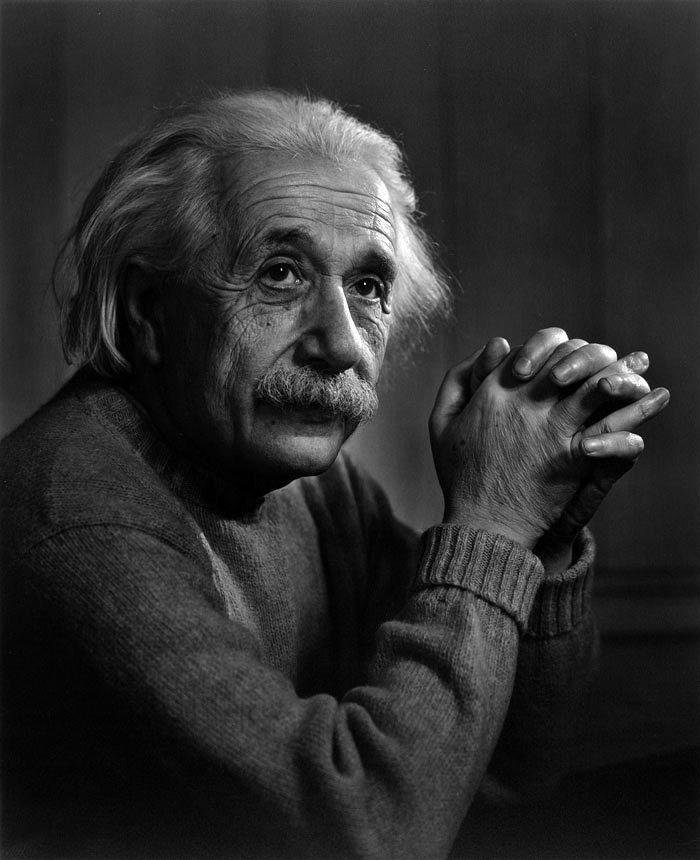
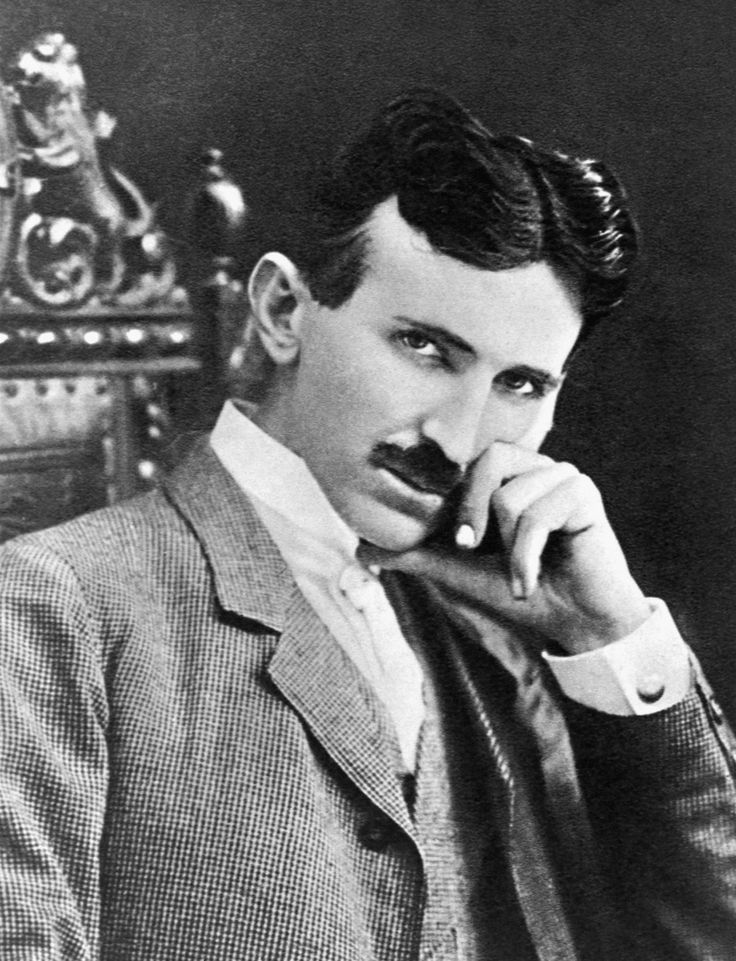
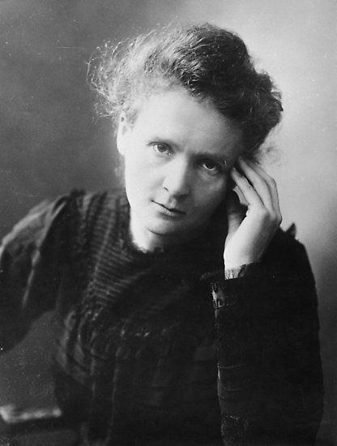
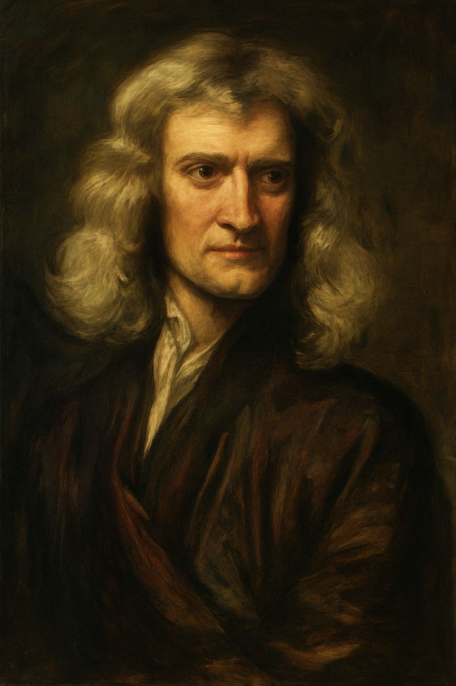

Albert Einstein
Developed the theory of relativity and changed modern physics.
Explore

Nikola Tesla
Inventor of AC electricity and pioneer of wireless energy.
Explore

Marie Curie
Discovered radioactivity and won two Nobel Prizes.
Explore

Isaac Newton
Formulated the laws of motion and universal gravitation.
Explore